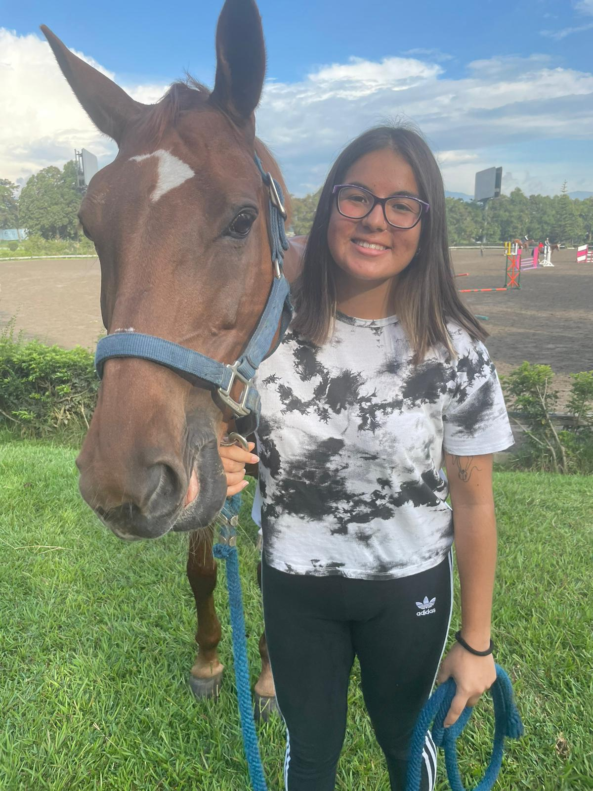

I am a first year student at Essec Globa BBA, really excited to live abroad, discover Paris and experiencing being independent! In this website, you will learn more about my life before moving, what i like and enjoy.
Discover my Website!I am 18 years old, my birthday is the 7th of December and I was born in 2004! That makes me a Saggittarius, a fire sign, very passionate and curious. I love my parents and my younger brother, we are very close and we love to travel and discover new countries with different cultures. I come from Guatemala, a country whose culture is influenced by their ancentors, the Mayas. You would love it there, the weather is always spring-like! We only have two seasons and it is why Guatemala is known as the Country of Eternal Spring.
Click here to learn more about the Mayan Culture!So... I have 5 dogs! At first we only had two but they loved eachother so much that they had several litters and every time we would keep one from every litter.
I also have a bigger furry friend, my horse! Her name is Jazmin, we used to compete in show jumping before I moved to France and i miss her a lot. Hope you enjoyed the pictures :)
As you probably deduced from the last section, I love to ride horses! I used to compete in Guatemala for show jumping with my mare Jazmin. We won several international and national competitions.
I like to read, more specifically thriller books or books where the story takes place during the World Wars.
I enjoy listening to music, it brightens my mood but it also helps me to let my feelings out depending of the song. My favorite artists are all the members from One Direction, Kali Uchis, Bad Bunny, Rauw Alejandro, Melanie Martinez and many more.
I ABSOLUTELY LOVE FOOD! I am a foodie person, I enjoy having good meals and discovering new flavors. Now that I live far away from home, I'm learning how to do tasty meals by myself.
Also mentionned it before briefly, I like to travel! Recently, I've been visiting my friends that moved away like me to other regions of France or to other European countries. I am now a master of trains and planes, even though I am still getting used to the transporting system here. In Guatemala, the public and national transport to other regions/countries is very limited so I am still learning how the booking and websites work here.
Now... let's be honest for a moment... I LOVE TO PARTYYY! Specially if I'm going with my best friends, i enjoy going out clubbing and getting some drinks on Fridays to have a break from studies. I miss haging out with my friends from Guatemala but I am so grateful for the New friendships that I have developped!